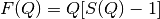
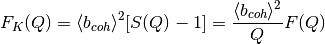
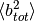
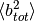

PDConvertReciprocalSpace dialog.
Table of Contents
| Name | Direction | Type | Default | Description |
|---|---|---|---|---|
| InputWorkspace | Input | MatrixWorkspace | Mandatory | Input workspace with units of momentum transfer |
| From | Input | string | S(Q) | Function type in the input workspace. Allowed values: [‘S(Q)’, ‘F(Q)’, ‘FK(Q)’, ‘DCS(Q)’] |
| To | Input | string | S(Q) | Function type in the output workspace. Allowed values: [‘S(Q)’, ‘F(Q)’, ‘FK(Q)’, ‘DCS(Q)’] |
| OutputWorkspace | Output | Workspace | Mandatory | Output workspace |
The neutron diffraction is measuring the differential scattering cross section (DCS(Q) in the algorithm)
(1)
Here the  is the number of scattered neutrons in unit time in a solid angle
is the number of scattered neutrons in unit time in a solid angle  , and
, and
 is the incident neutron flux. The algorithm supports the following conversions:
is the incident neutron flux. The algorithm supports the following conversions:
(2)
(3)
(4)
where  is the number of scatters in the sample and both  and
is the number of scatters in the sample and both  and  are defined in the Materials concept page.
are defined in the Materials concept page.
NOTE: This algorithm requires that SetSampleMaterial v1 is called prior in order to determine the and terms.
This algorithm uses the external project PyStoG and specifically uses the pystog.converter.Converter object. To modify the underlying algorithms, the following functions are used for the conversions.
 conversions are:
conversions are: conversions are:
conversions are: conversions are:
conversions are:import wget
import numpy as np
import matplotlib.pyplot as plt
from mantid.simpleapi import CreateWorkspace, SetSampleMaterial, PDConvertReciprocalSpace
from mantid import plots
# Grab the reciprocal data for argon
url = "https://raw.githubusercontent.com/marshallmcdonnell/pystog/master/tests/test_data/argon.reciprocal_space.dat"
filename = wget.download(url)
q, sq, fq_, fk_, dcs_ = np.loadtxt(filename, skiprows=2, unpack=True)
# Convert S(Q) to Mantid wksp
s_of_q = CreateWorkspace(DataX=q, DataY=sq,
UnitX="MomentumTransfer",
Distribution=True)
SetSampleMaterial(InputWorkspace=s_of_q, ChemicalFormula='Ar')
f_of_q=PDConvertReciprocalSpace(InputWorkspace=s_of_q, From='S(Q)', To='F(Q)')
fk_of_q=PDConvertReciprocalSpace(InputWorkspace=s_of_q, From='S(Q)', To='FK(Q)')
dcs_of_q=PDConvertReciprocalSpace(InputWorkspace=s_of_q, From='S(Q)', To='DCS(Q)')
fig, ax = plt.subplots(subplot_kw={'projection':'mantid'})
ax.plot(s_of_q,'k-', label='$S(Q)$')
ax.plot(f_of_q,'r-', label='$F(Q)$')
ax.plot(fk_of_q,'b-', label='$F_K(Q)$')
ax.plot(dcs_of_q,'g-', label='$d\sigma / d\Omega(Q)$')
ax.legend() # show the legend
fig.show()
The output should look like:

Categories: AlgorithmIndex | Diffraction\Utility
Python: PDConvertReciprocalSpace.py (last modified: 2020-03-27)